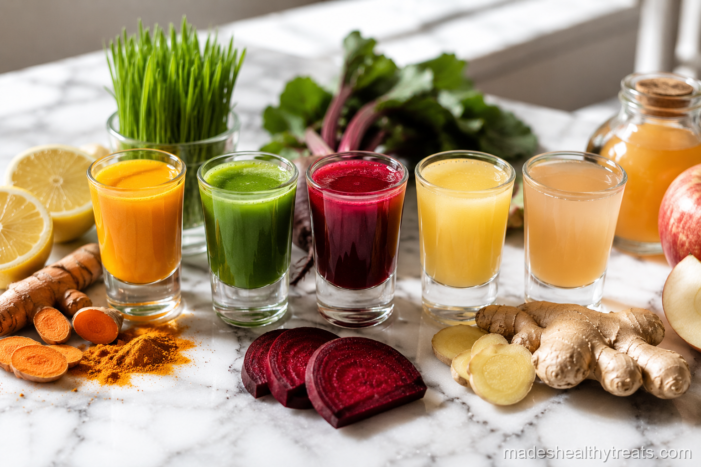

Wellness Booster Shots
Concentrated. Powerful. Done in one sip.
I discovered wellness shots completely by accident. I had leftover ginger from a juice recipe, half a lemon sitting on the counter, and about three minutes before I had to leave the house. I threw everything into the blender, strained it, poured it into a shot glass, and drank it in one go. Within twenty minutes I felt more awake than I had all morning. That was two years ago and I have not missed a morning shot since. These are the five shots I rotate through depending on what my body needs that day, each one takes under five minutes and costs pennies compared to anything you would buy at a juice bar.



How to Take a Wellness Shot
This is how I make the ritual feel helpful instead of intense.
Start Empty
I like taking my wellness shot first thing in the morning on an empty stomach because the flavor wakes me up and the ritual sets the tone before breakfast gets involved.
Chase With Water
I always follow a strong shot with a glass of water, especially when ginger, cayenne, turmeric, or apple cider vinegar is involved, because my body likes support more than drama.
Ease Into It
If you are new to ginger or cayenne, I would start every other day and let your body get used to the warmth before making it a daily habit.
Made's Note
A wellness shot should feel like a tiny act of care, not a test of toughness. Start gently, adjust the heat, and let your morning ritual grow with you.